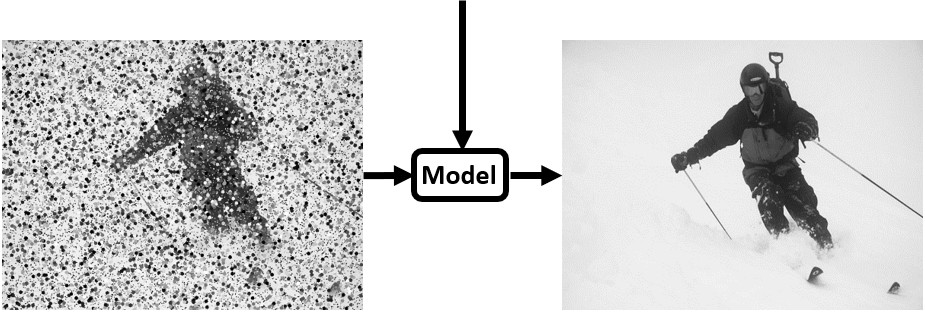
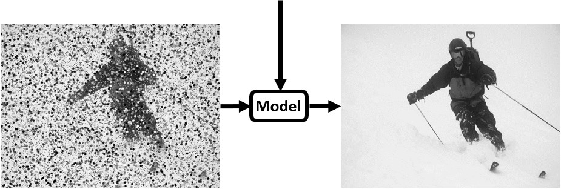
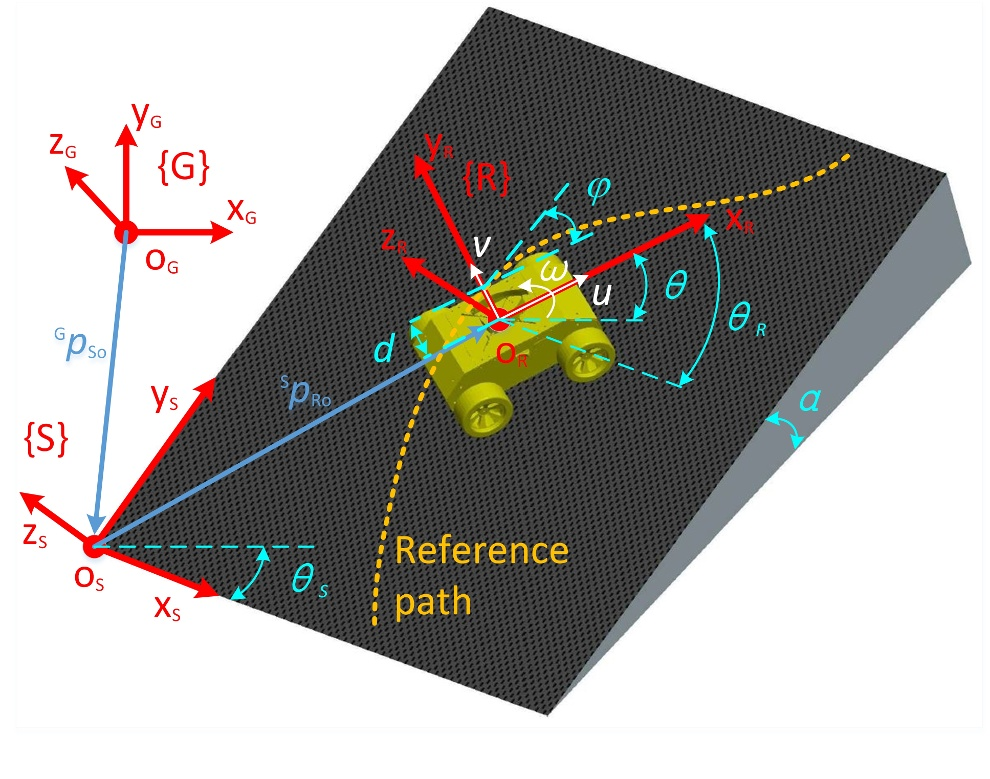
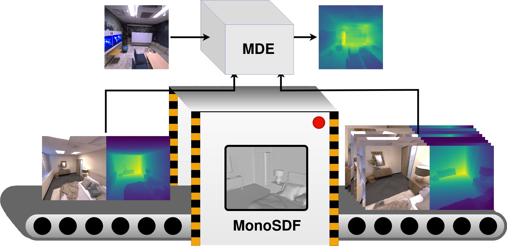
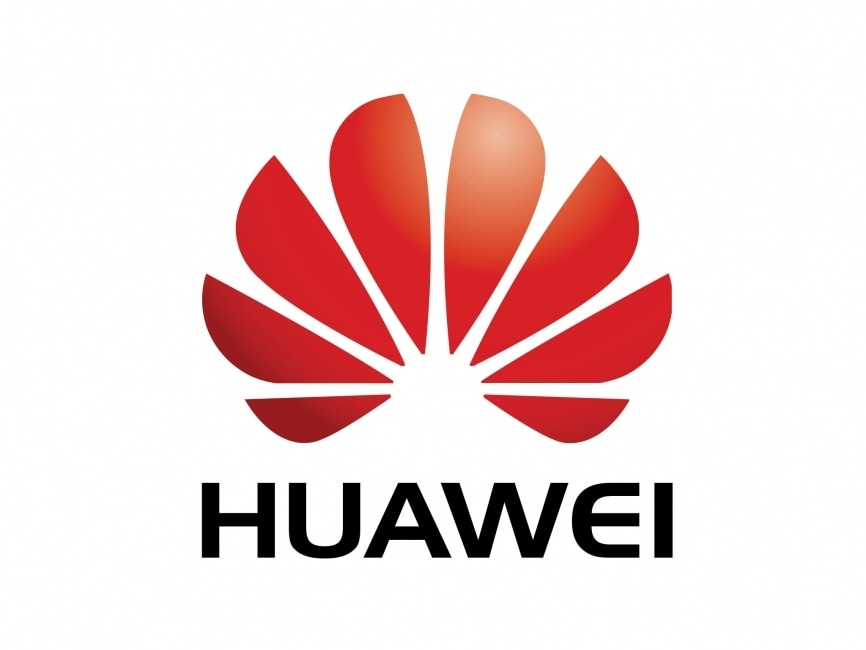

Rong Zou

I am a master’s student in Robotics, Systems and Control at ETH Zurich, tutored by Prof. Roland Siegwart. My research interests include machine learning, computer vision, robotics, and their practical applications.
I am currently a Computer Vision and Machine Learning Research Intern at the Computer Vision Lab, led by Dr. Dengxin Dai, at Huawei Zurich Research Center. Previously, I completed my master’s thesis on the topic of retrieval robust to object motion blur at the Computer Vision and Geometry Group (CVG) under the guidance of Prof. Marc Pollefeys. Additionally, I have conducted research on event-based vision at the Robotics and Perception Group (RPG) with Prof. Davide Scaramuzza.
Prior to my Masters, I received my bachelor’s degree in Engineering from Huazhong University of Science and Technology (HUST).
Available for New Opportunities in October 2024!
As I finish my master’s degree, I am actively seeking opportunities in machine learning, computer vision, and robotics. I am ready to contribute to innovative projects and can start as early as October 2024. Check my CV and contact me if you are interested!
News
| Jul 1, 2024 | I am thrilled to share that our paper “Retrieval Robust to Object Motion Blur” has been accepted to the European Conference on Computer Vision (ECCV) 2024! |
|---|---|
| Mar 15, 2024 | I’m now part of the Computer Vision Lab at Huawei Zurich Research Center, working as a Computer Vision & Machine Learning Research Intern. I’m excited about the opportunities ahead. |
| Apr 28, 2023 | I’m happy to share that I’ve joined Computer Vision and Geometry Group (CVG) and have started my master’s thesis, exploring the topic of object retrieval. |
| Sep 5, 2022 | I’m delighted to begin my semester thesis at Robotics and Perception Group (RPG), where I’ll be working on event-based vision. |
| Jun 1, 2022 | I’ve commenced my position as Research Assistant at Robotic Systems Lab (RSL), focusing on the Autonomous River Cleanup (ARC) project. |
| Sep 21, 2021 | As of today, I’ve begun my journey as a master’s student in Robotics, Systems and Control at Eidgenössische Technische Hochschule Zürich (ETH Zurich). |
Publications
 | European Conference on Computer Vision (ECCV), 2024
A method and dataset for learning robust representations capable of bidirectional matching between motion-blurred objects and their deblurred counterparts. |
   | arXiv, 2023
A data-driven approach to reconstruct the background from a single viewpoint in the presence of dynamic occlusions. |
|  | International Journal of Control, Automation and Systems, 2022
An MPC strategy combined with a fuzzy system to enable a robot to track paths more accurately on slopes. |
Projects
|  |
An approach to enhance the performance of existing supervised MDE methods by generating virtual views using e.g. MonoSDF as additional supervisory signals, circumventing the labour-intensive and time-consuming process of collecting extra data. |
 |
A comprehensive study of the impact of canonical transformations and training data augmentation via geometric transformations on the box refinement stage of a two-stage 3D object detection method for detecting cars in LiDAR data. |
 |
A complete visual odometry (VO) pipeline. Local (sliding-window bundle adjustment) and global (loop detection & correction) optimization were also implemented, which alleviates the scale drift and transforms the pipeline into a VSLAM framework. |
Experiences
|  | Main tasks: development of learning-based algorithms to enhance the quality of images captured by mobile phone cameras, specifically focusing on image restoration and artifact removal. |
 | Main tasks: data processing, front-end and back-end real-time communication, real machine testing and deployment. |
| Main tasks: improvement of robotic arm grasping planning algorithm, construction of robot grasping experimental platform, and grasping stability test on the real machine. |